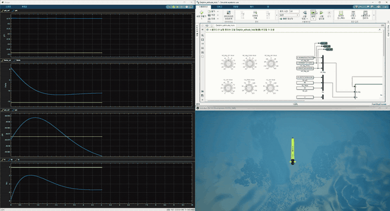

[Simulink] (MATLAB R2025b, ROS 2 Jazzy 내장)
│ ① cmd_k = [k, δr, δs, n] ── /remus100/cmd ──▶
│ ④ state_{k+1} ◀── /remus100/state ── [k t u v w p q r x y z φ θ ψ]
[holo_ros2_node.py] (pixi ROS 2 Jazzy, rclpy) ← 직접 만든 bridge
│ ② MSS remus100 → ν̇ → a_world = R(ν̇ + ω×v)
│ ③ env.act + env.tick (HoloOcean Python API, 공유 메모리 — ROS 아님)
[HoloOcean / Unreal] 가속도 적분 + 렌더링
HoloOcean 자체는 ROS 기반이 아니다. ROS 2는 bridge 노드에만 있다 (BYU 공식 holoocean-ros 도 같은 구조)
lockstep: 노드는 같은 k의 cmd가 올 때까지 tick하지 않는다 → state 하나당 cmd 하나, 재현성 보장
현재 구현 범위 — 무엇이 참값이고 무엇이 빠졌나 (2026-09-29 정리)
한 줄로
지금까지 만든 것은 “Simulink ↔ 시뮬레이터 연동” 과 “그 연동이 결과를 왜곡하지 않는다는 검증” 까지다.
제어기는 참값 상태를 받는다 — IMU 를 포함해 센서 노드는 하나도 없다.
[Simulink 제어기] attitude_pid / Step/Controller (자리표시)
│ cmd = [k, 입력...] Float64MultiArray
▼ state = [k, t, u v w p q r, x y z φ θ ψ] ← 참값
[ROS 2 Jazzy] /<vehicle>/cmd, /<vehicle>/state (+ /clock)
▼
[holo_ros2_node.py] MSS·Delphin2 식(Python 이식)으로 ν̇ → world 가속도
▼
[HoloOcean/Unreal] 가속도 적분(50 Hz) + 3D 렌더링
▲
└ DynamicsSensor = 참값 상태를 그대로 읽는 가상 센서 (센서 아님)
검증된 것
층
한 일
검증
동역학
MSS remus100.m, 배포본 Delphin2.m Python 이식
MATLAB 대비 5e-13 / 3e-14
시뮬레이터 연결
world 가속도 변환 (ω×v 누락 버그 수정)
MSS 대비 최악 0.69 % @50 Hz
통신
ROS 2 lockstep (k 번호), 리셋
스텝 누락·중복 0, 재시작 반복 동일
Simulink
ROS 2 블록 방식 / HoloOceanPlant 방식, local 비교 모델
holo vs local ψ 0.14°
아직 실제와 다른 것 — 놓치기 쉬운 7가지
센서가 없다 — 참값, 잡음 0, 지연 0. 실제 IMU 의 잡음·bias·주기 차이가 없고, 위치도 DVL 적분이 아니라 정답. → 지금 제어기는 추정기(EKF) 없이도 도는 이상적 조건
통신이 이상적 — lockstep. 시뮬레이터가 제어기를 기다려 준다. 실제 기체는 안 기다린다 (센서는 제 주기대로, 늦으면 늦는 대로). Pacing 1x 는 화면 속도일 뿐 비동기 환경 흉내가 아님.
HoloOceanPlant 의 blocking 은 시뮬레이션 전용 편의 (코드 생성 불가) — 실제 실험 구조에 더 가까운 건 ROS 2 블록 방식(remus100_holo_loop)
메시지가 표준이 아니다. 전부 Float64MultiArray. 실제 로봇은 sensor_msgs/Imu, nav_msgs/Odometry 등 표준 메시지
구동기가 없다 (Delphin). 힘·모멘트 직접 입력 — 추진기 rpm·추력 곡선·지연·할당 없음, 포화는 제어기 안 ±30 N·m 뿐. Remus 는 핀·rpm 포화(±20°, 1525 rpm)는 있지만 지연 없음
환경이 비어 있다. 조류·파도·해저/장애물 상호작용 없음 (수심 150 m 빈 물). 중력·부력은 Unreal 이 아니라 MSS 식의 복원력 항
검증 범위는 “HoloOcean = MSS 식” 까지. MSS 식이 실제 기체와 맞는지는 미검증 (Delphin2 Ixx = 1.8 은 “Assumed value”). 화면 외형은 TorpedoAUV
제어기는 자리표시. 게인 설계 근거 없음 — 제어 성능은 아무것도 보장 안 됨
보강 (2026-09-29) — 7칸 루프, 센서별 원리·주기·HoloOcean 옵션, 오차 8종, 시계 3개, 지연→위상 여유, 좌표 규약 3개, 채점용 truth 분리, 단계별 확인 방법
강의 구조 그대로: Remus100_Model_holo.slx 에서 Signal Builder 쪽을 제어기로 바꿈 (plant 블록 출력 = 12 상태)
ROS 2 블록 구조: remus100_holo_loop.slx 의 Step/Controller 안 (입력 t, η, ν / 출력 [δr; δs; n]) → cfg.mode 추가 또는 서브시스템 교체
4-1. Delphin2 자세 PID (MATLAB)
run_delphin_holo % 노드 + holo 모델 → Run → Knob 조절 → Stop (반복 가능) → 끝: clear nodeCleanup
노드 없이 연습: Delphin_attitude_local.slx 바로 Run. 내 제어기는 attitude_pid 자리 (입력 x 12 / 출력 tau 6)
노드만 따로 (Windows PowerShell)
& "$env:LOCALAPPDATA\pixi\bin\pixi.exe" run --manifest-path C:\sim\ros2_jazzy\pixi.toml python C:\Archive\제어공학특론\holoocean_env\holo_ros2_node.py --render
문제 생기면: holoocean_env\out\holo_ros2_node.log → Unreal HolodeckLog.txt → ros2 topic list (pixi 환경에서)
꼭 지킬 것
Ts 와 노드 --hz 를 맞춘다 (기본 50 Hz ↔ Ts 0.02). 다르면 제어기 이산 적분과 사본 시계가 틀어진다
노드는 반드시 pixi run 으로 (python.exe 직접 실행 → AMENT_PREFIX_PATH 오류)
run_holo_loop 뒤엔 base Ts = 0.02 가 남는다 → 강의 원본을 돌리기 전 Ts = 0.01
첫 실행 Timed out waiting for binary to load 는 셰이더 캐시 — 다시 실행
강의 원본(실습자료\)은 수정하지 않는다. 사본에서 작업
smoke_torpedo.py 같은 HoloOcean 원본 FossenInterface 예제에는 ω×v 버그가 남아 있다 — 검증용으로 쓰지 말 것
Knob 에 묶인 Constant 의 Value 는 숫자로. 변수 이름이면 Knob 연결이 끊긴다 (09-29 θ Knob)
HoloOceanPlant 모델은 노드를 켜 둔 채 Stop/Run 반복 가능 (Run 마다 리셋). ROS 2 블록 모델 remus100_holo_loop 은 리셋을 안 보내므로 실행마다 노드 새로
Delphin 모델에 들어 있는 PID·게인은 통신 확인용 자리표시 — 설계 근거 없음. 제어 성능 결과로 쓰지 말 것
진행 흐름 / Timeline
2026-09-26 — 강의 AUV를 RL 실습 플랫폼으로 쓰기로. 처음엔 Gazebo + ROS 2 (캡스톤 스택) 계획
2026-09-27 오전 — Gazebo 제외, 문헌 조사 후 검증 = HoloOcean 2.0, 학습 = Isaac Lab 결정. 기준 = MSS 최신판. 강의판·Python판과의 차이 6개 분해
2026-09-27 오후 — HoloOcean 설치 · MSS 동역학 이식 · ω×v 버그 수정 · ROS 2 lockstep · 강의 모델 사본까지 → 2026-09-27
2026-09-28 — Delphin2 이식, --vehicle delphin2, 자세 PID 실시간 게인 조절 모델 holo/local (daily 노트 없음 — 기록은 2026-09-29 에 재구성)
2026-09-29 — 모델 구조 정리, θ Knob 끊김·재실행 교착 수정(리셋 기능), claude-mem 기록 복구. 방향 정리: 무대는 검증 완료, 제어기는 강의 따라 직접 → 2026-09-29
2026-10-18 수직 기동 대화에서 연구 아이디어가 나옴. 정지 임무에서 해류와 구동기 구성에 따라 유리한 선체 자세가 달라질 수 있다는 것. Delphin2 계수로 검산하면 수평 해류에서는 누운 자세가 약 28배 유리하고, 선 자세는 복원 모멘트 약 47 N·m를 계속 버텨야 함 → 정위치 유지 자세 선택 · 2026-10-18
내 역할 / My contribution
남의 것 (도구로 사용)
이 프로젝트에서 만든 것
HoloOcean 2.3.0 (BYU FRoSt Lab)
MSS remus100.m 의 Python 이식 + 3단 검증 (L1 5e-13)
MSS toolbox remus100.m (Fossen)
HoloOcean FossenInterface 의 ω×v 누락 발견·수정
RoboStack ROS 2 Jazzy, MATLAB ROS Toolbox
ROS 2 bridge 노드 + lockstep 프로토콜 (k 번호 매칭)
강의 배포본 Remus100_Model.slx (윤원근 교수, TA)
Simulink 폐루프 모델, HoloOceanPlant System object, 강의 모델 사본
강의 배포본 Delphin2.m, Delphin_Model2_Full.slx (개루프)
Delphin2 이식, holo/local 자세 PID 모델, 리셋 프로토콜
결과 / Outcome
HoloOcean 안 REMUS 100 = MSS 최신판과 최악 0.69 % (50 Hz) / 0.29 % (100 Hz) — 남은 오차는 Unreal 1차 적분뿐
Simulink ↔ HoloOcean ROS 2 lockstep: 추가 오차 0, 스텝 누락·중복 0, 실시간 2.2~3.2배
강의 50 s 입력 재현: 원본 대비 0.34 %
Delphin2 자세 제어 실시간 Knob 조작 (HoloOcean, 1배속):

배운 것 / Takeaways
Transport theorem이 코드 버그로 나타난다. body frame 미분 ν̇ 를 world 적분기에 넘길 땐 ω×v 를 더해야 한다. 직진에선 안 보이고 선회에서만 틀어진다 → Transport Theorem
시뮬레이터 신뢰성 = 동역학 검증. 층을 나눠(L1 이식 / L2 적분 방식 / L3 실제) 오차 출처를 하나씩 분리하면 “남은 오차가 어디서 오는지” 까지 말할 수 있다
lockstep 은 설계로 만든다. ROS 2는 기본적으로 비동기라 스텝 번호를 메시지에 넣고 서로 기다리게 해야 결정론적이 된다. 제어기가 Simulink 시계를 쓰는지(강의 모델) 메시지 시간을 쓰는지에 따라 방법이 달라진다
HoloOcean 은 ROS 기반이 아니다 — Python API 가 주인인 Gym 스타일